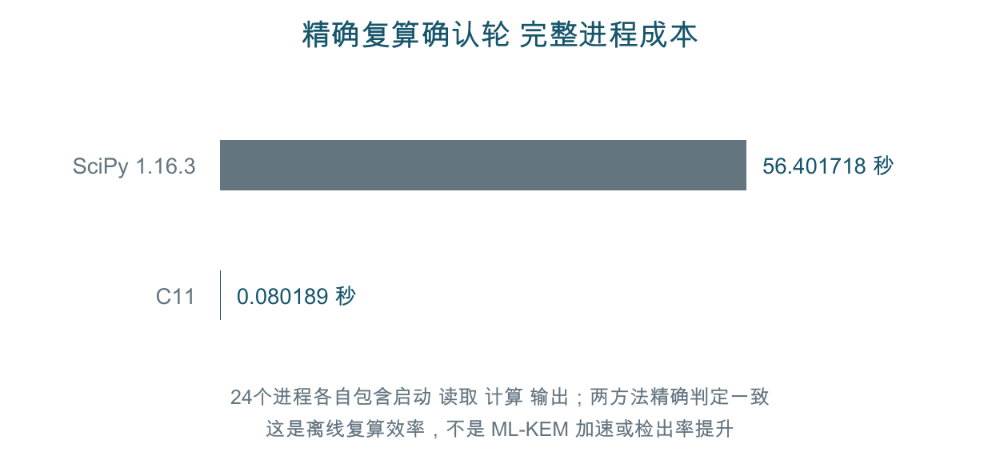

真实普通负载

逐次原始数据及区间见E02。图为运行均值，长尾未删除；单次P99不从批次窗口模拟。
工程实践 · ML-KEM-768 · C11 · 离线可复算
功能通过、原始记录、名义差异和安全归因分别判断。新受控防护时序闭环及非原作者执行仍缺，未宣称全部竞赛要求达标。
| 对象 | 结果 | 解释边界 |
|---|---|---|
| 原生普通测量 | x86_64 KVM，4vCPU；9000条前置及54000条正式普通记录 | VM不是裸金属；宿主频率/调度未控制 |
| 同负载普通性能 | 掩码对照约+101.959ns；正常优化形态约−30.101ns | 探索区间都跨零，不作防护或速度显著判定 |
| 无秘密精确复算 | 8任务48进程，C/SciPy尾计数和判定完全一致；中位进程比值0.001388504 | 启动/导入计入基线，不代表密码加速或检测增益 |
| 人工机制档案 | 20个历史运行生成40份原报告；H1及hardened残差失败保留 | 历史白盒机制审计，不是新上游部署漏洞 |
独立NIST向量、四版隐式拒绝/接口与功能等价；默认只读机制档案。新成对统计要求对应随机化和无后效条件，区间另需运行单位iid。资料不将未检出解释为恒时。
逐次原始数据及区间见E02。图为运行均值，长尾未删除；单次P99不从批次窗口模拟。

SciPy1.16.3/NumPy2.3.5，向量化、batch4096、完整2^20排列，统计量和输入相同。Gray枚举及随机化数学并非首次提出。
cmake --preset baseline cmake --build --preset baseline --parallel 4 build/cmake/audit check build/cmake/audit replay "$PWD" "$PWD/runs/new-history" build/cmake/audit performance-replay docs/evidence/native-final-20261007/performance runs/new-performance.report
输出必须新建。source导出清单验证构建输入；元数据角色处理不冒称原始字节。数字CSV保持原字节，摘要可独立核查。
R05–R07需要新的受控机制前后数据及因果分离；R04模型/依赖校准仍有限；R11无真实非原作者签收。R12已有有限精确复算效率证据，不等于全域检测或防护改进。系统编号、正式题名、实际分工、签名、意见及盖章须由团队完成。